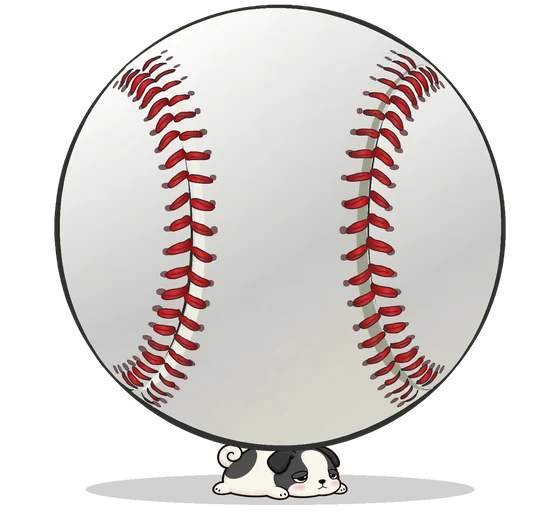

ニュース更新中
ニュースの先は、コメント欄で。
プロ野球ニュースを毎時更新。気になるニュースには、コメントで感想をどうぞ。野球好き同士、試合の日もオフの日も、ここで盛り上がりましょう。

最新の野球ニュース
- 平良海馬の5年127億円契約、米ESPNは「B＋」評価 今オフFA市場で2番目に優れた投手との見方も（2026年11月25日（水） 9時／コメント0件）
- カブス、今永昇太との再契約は望み薄か 佐藤輝明＆ロジャーズ獲得の次は先発補強へ、伊藤大海にも注目（2026年11月25日（水） 9時／コメント0件）
- ヤクルト、巨人戦力外の山田龍聖を獲得調査 先発も救援もこなす万能左腕、育成での獲得を検討か（2026年11月25日（水） 9時／コメント0件）
- 最優秀バッテリー賞は阪神・高橋遥人＆伏見寅威と西武・平良＆小島 伏見は両リーグ制覇の史上初（2026年11月25日（水） 9時／コメント0件）
- 西武・栗山巧、来季から球団本部付特別補佐に 引退後はフロントで「見習いからスタート」（2026年11月25日（水） 9時／コメント0件）
人気ニュースランキング
読まれた回数（PV）をもとに集計し、ニュース更新のたびに（1時間ごと）並べ替えています。
このサイトについて
- ニュースの要約・感想・記録は、すべて自分の言葉で書きます（記事本文や写真の転載はしません）
- ニュースは1時間ごとに確認し、新しい動きがあった時だけ更新します
- コメント欄がこのサイトの主役です。感想やツッコミ、お待ちしています
- オフシーズンは、移籍・契約更改・キャンプの話題が中心です
ぱぐおの野球応援スタンプ
姉妹サイト「パグのしっぽ」のキャラクター、ぱぐおのLINEスタンプには野球応援編があります。販売状況は本体サイトでご案内しています。
姉妹サイト
- パグのしっぽ（pug-o.jp）：キャラクター「ぱぐお」のホームページ
- ツール販売ページ（tools.pug-o.jp）：投資・不動産・資産管理ツール（準備中）